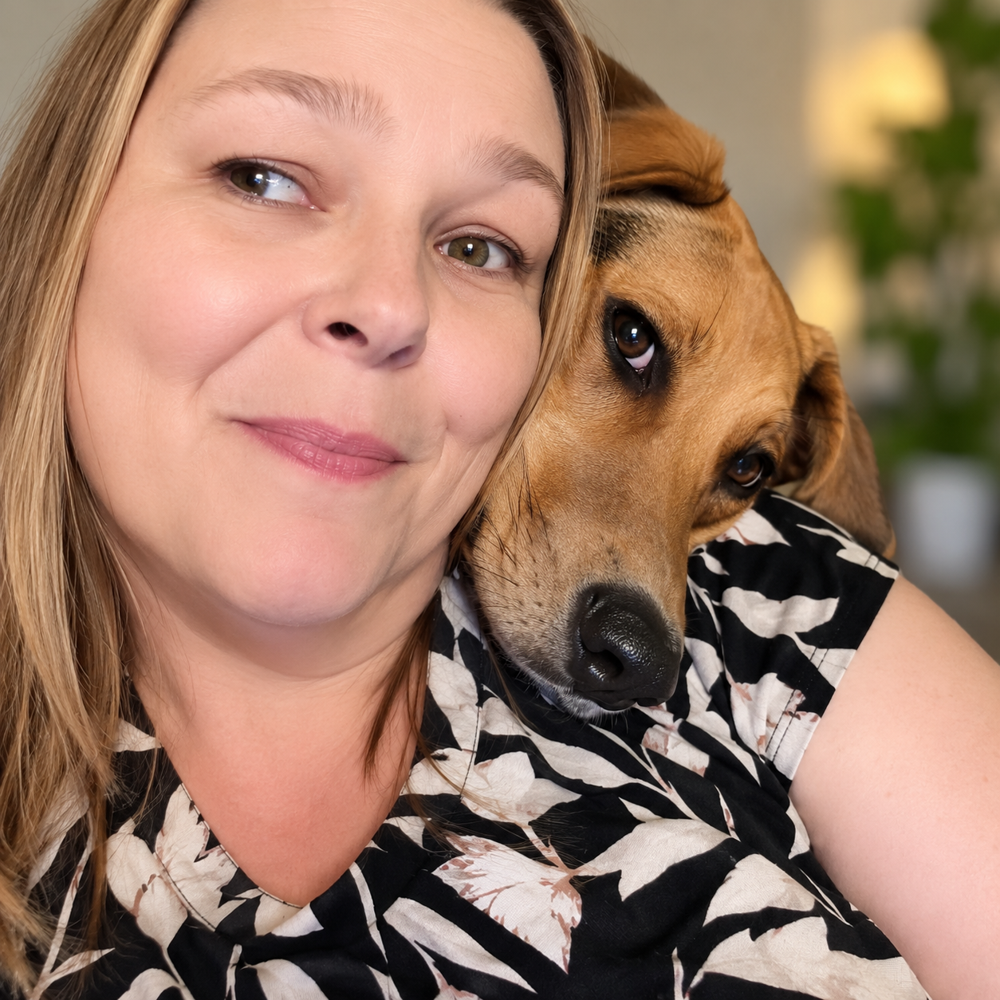

Curious by nature. Solution focused by habit.
My background spans operations, compliance, administration, process improvement, and people leadership. Regardless of the role, I tend to do the same thing: understand how the work is actually happening, identify what is getting in the way, and build practical solutions that make it work better.
I'm also a lifelong learner. If I don't know how to do something, I'm usually more interested in figuring it out than avoiding it. This is a place to share some of what I've built along the way, whether it started with a business problem, something I wanted to learn, or simply a question I couldn't leave alone.
